CLVSTR / Selected projects
Selected work.
Identities, printed matter, images & motion.
19 projects / 5 fields
De Saint Aise Identity

Medivm Artwork & Print
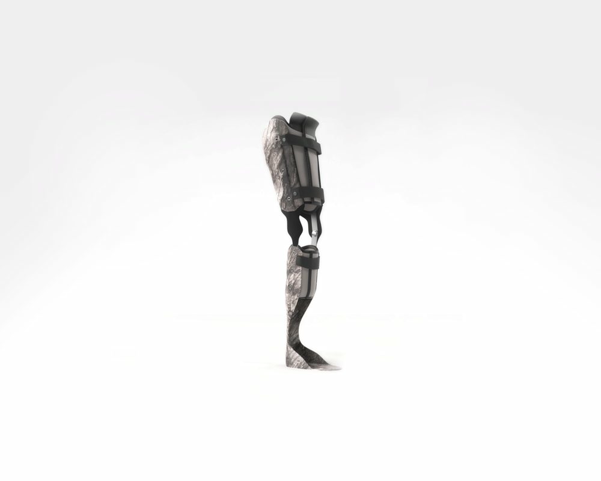
U-Exist Print & Surface

Terrarivm Generalis Identity

Longchamp Treatments
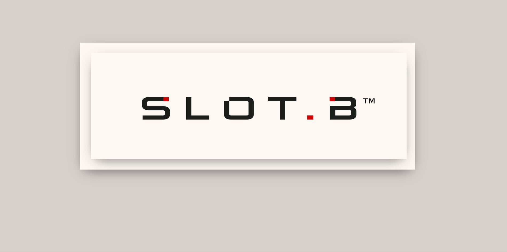
SLOT.B Identity
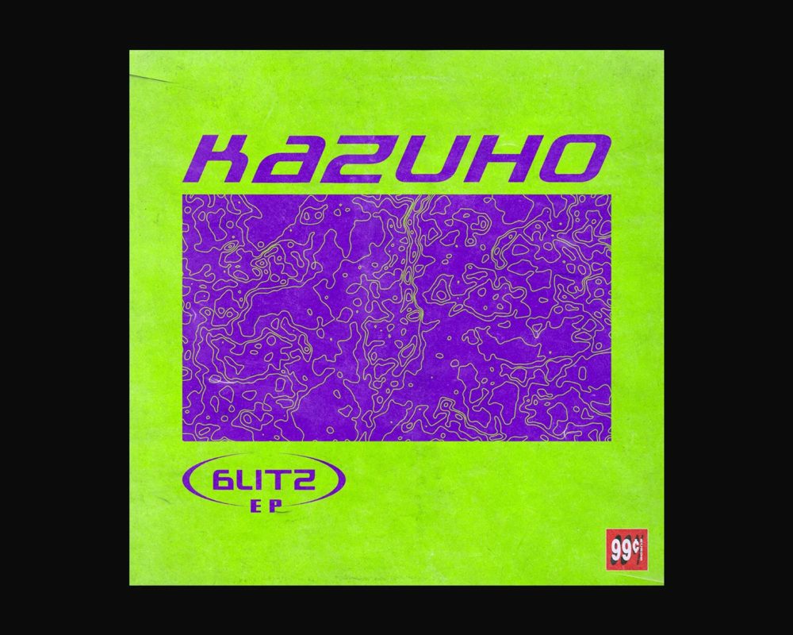
Kazuho Artwork & Print
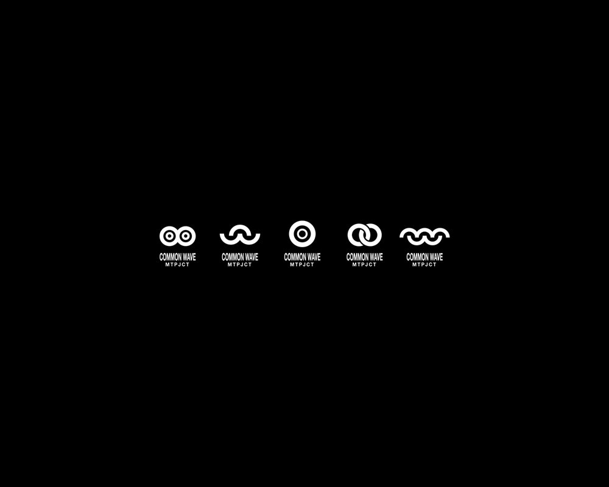
Common Wave Identity

Maskné Protect 3D & Motion
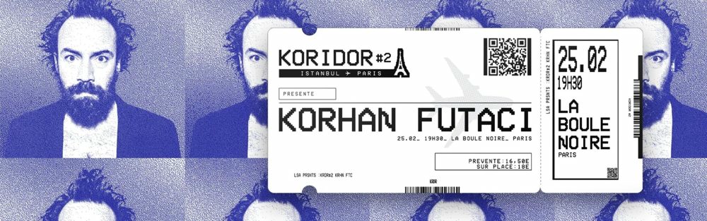
Koridor #2 Artwork & Print
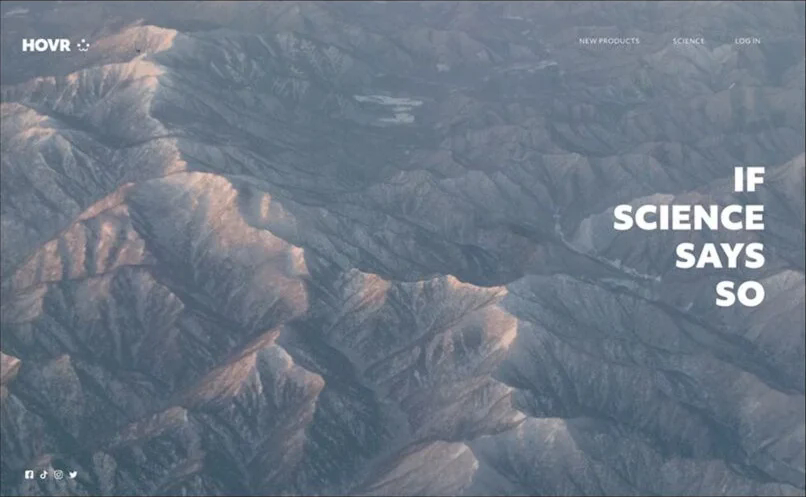
Hovr Identity
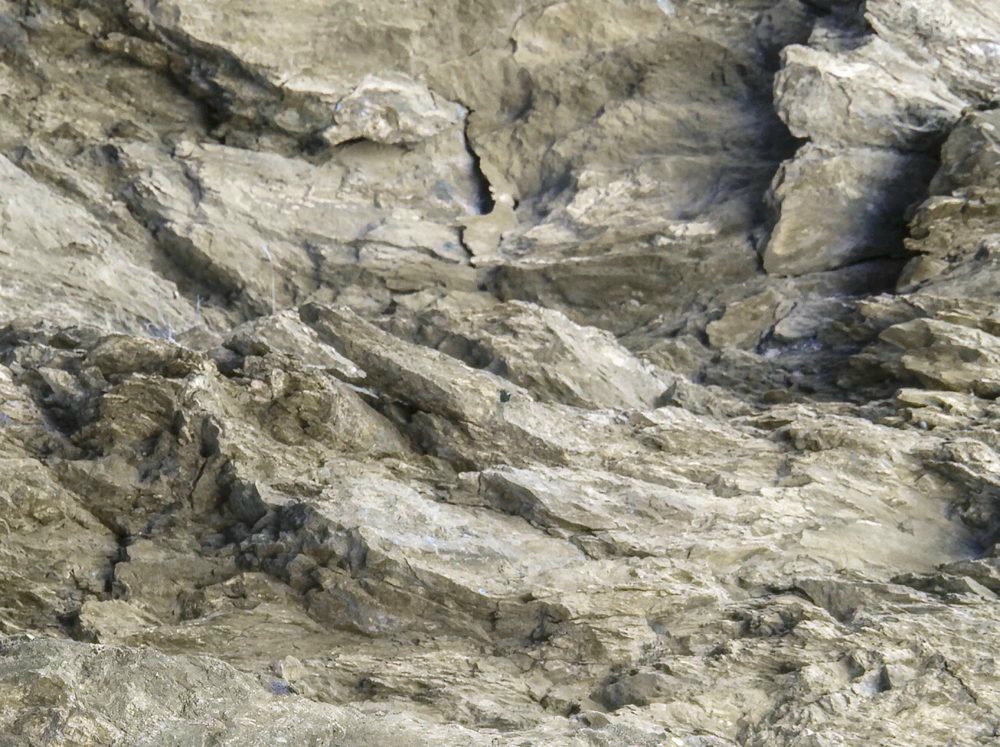
Smthg Smthg Rcrds Artwork & Print
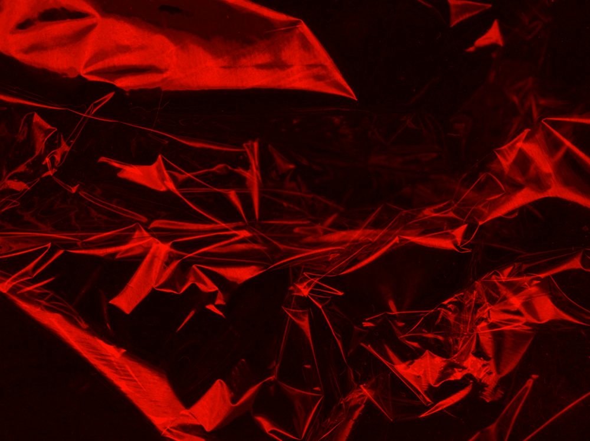
99 Cts Records Identity
TRENDT Print & Surface
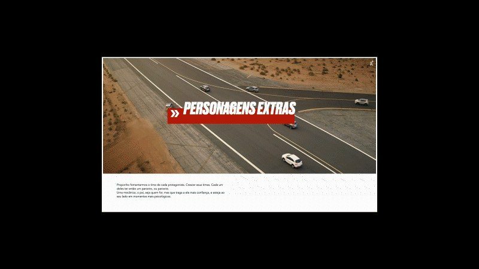
Vibra Treatments
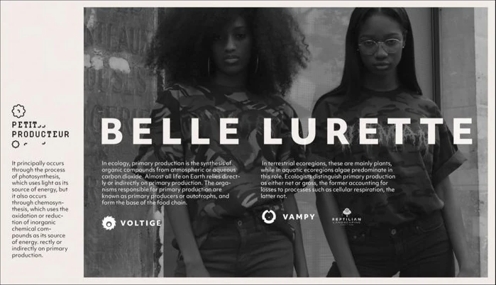
Petit Producteur Identity
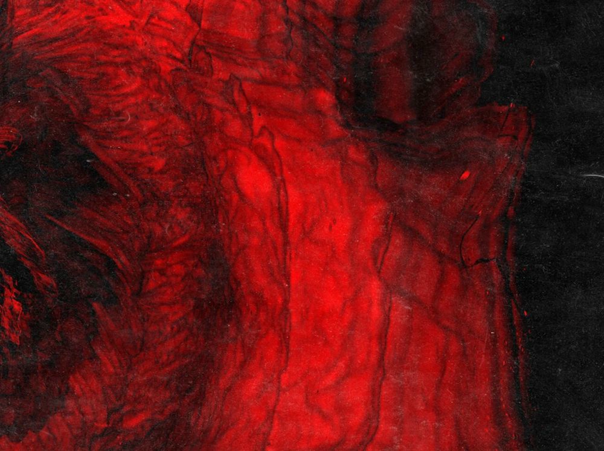
Ludgate Squatter Artwork & Print
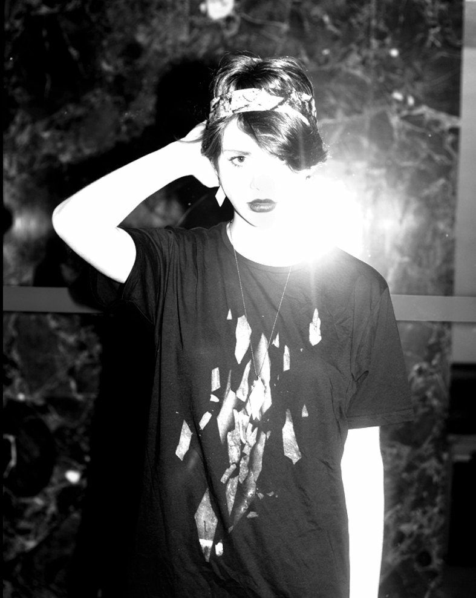
Rockaedron Print & Surface
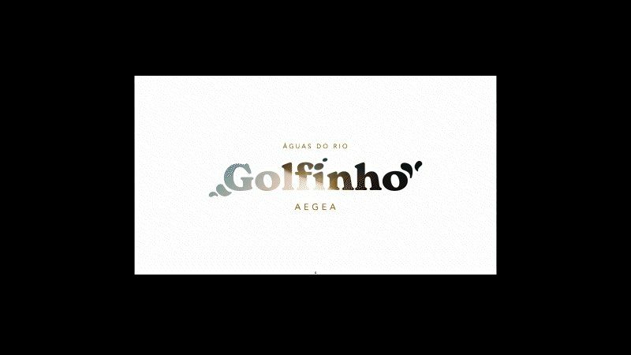
Golfinho Treatments